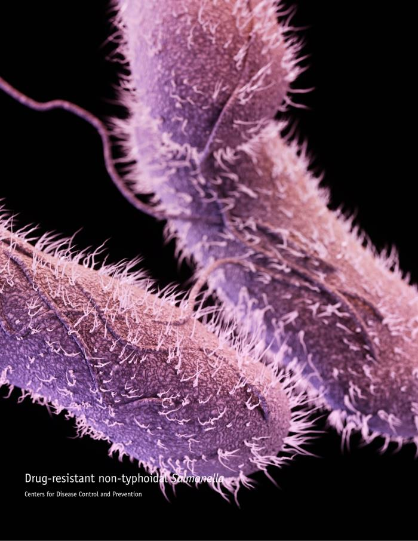
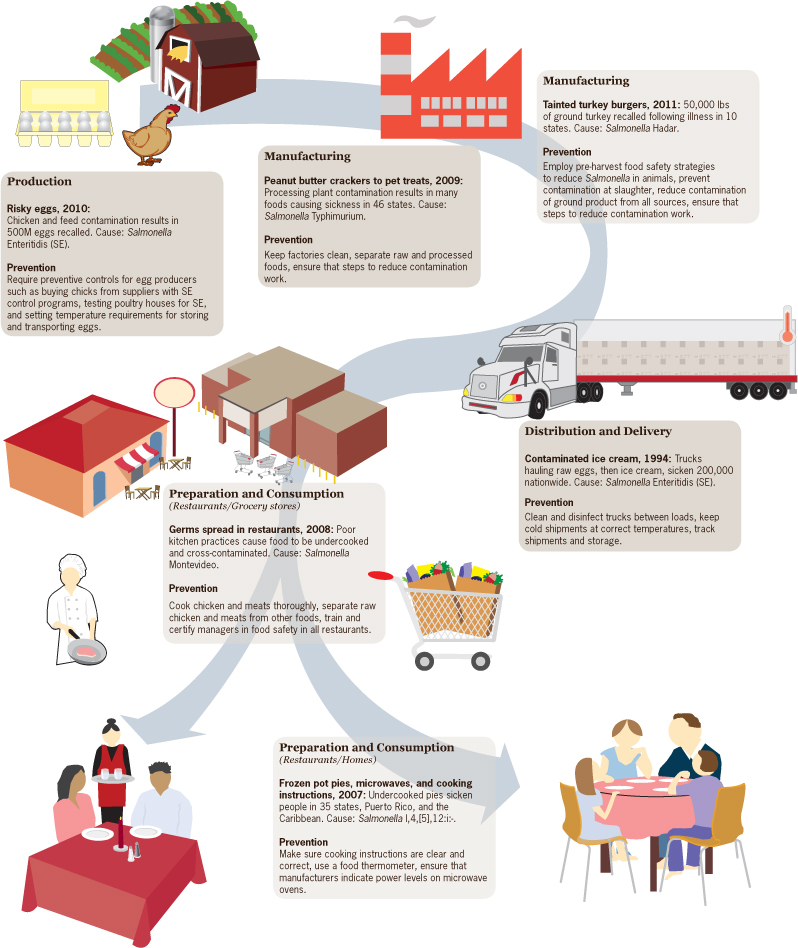
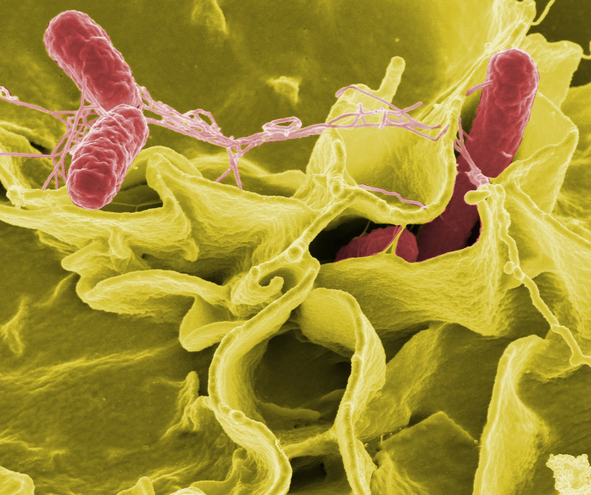
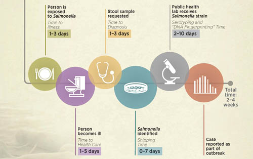

Salmonellosis in Oregon: An Exploratory Study
Background Information and Impact
Salmonella is a bacteria which causes salmonellosis. This is a relatively common foodborne illness characterized by diarrhea, fever, and acute abdominal pain. While most cases of salmonellosis last about 4-7 days without treatment or hospital admission, some cases can be very severe where the infection spreads to other body sites outside the gut. These severe cases are relatively rare but are potentially fatal if not treated properly. According to the Centers for Disease Control and Prevention (CDC) Salmonella infections are responsible for the highest number of hospitalizations and deaths of any foodborne illness in the US.
Salmonella is found in the guts of many different wild and domesticated animals and typically spreads to humans via the fecal-oral route. Most infections are believed to result from the consumption of contaminated food or water, but some infections can come from certain environmental exposures like handling reptiles.
In the latest summary report published by the Oregon Health Authority in 2016, Oregon experienced 448 reported cases of salmonellosis. Of these 448 reported cases, 46 were associated with outbreaks.
Information from the CDC on how to make the food you eat safer.
Oregon's Unique History with Salmonella
In September 1984, an outbreak of Salmonella occurred within the community of The Dalles in Eastern Oregon. The Dalles had relatively few cases of Salmonella in the past and had a population of 10,500. A team of epidemiologists from the local, state, and CDC eventually found 751 people in The Dalles whose disease matched the outbreak strain of Salmonella. Of the 751 people who became ill, 45 required hospitalization and none died. It eventually came to light that a religious group which had settled in the area a few years prior deliberately contaminated several local salad bars in The Dalles in the hopes of swaying local elections. The 1984 Rajneeshee bioterror attack was, and still is, considered the largest domestic bioterrorist attack in US history.
Oregon's bizarre history of the Rajneeshee cult and bioterrorism
(from The Oregonian)
Current Trends in Oregon
Cases of Salmonella in Oregon are fairly constant across time since 2002 according to the Oregon Health Authority report in 2016. Oregon consistently has fewer cases per capita than the US as a whole. Generally, incidence of salmonellosis is slightly higher among females compared to males though the reasons behind this are speculative. The elderly, the immunocompromised, and especially young children aged 0-4 are at highest risk for Salmonella infection.
The Salmonella bacteria can be classified into distinct serotypes. A serotype is a group within a bacteria species which share similar surface/chemical features and are used in outbreak investigations. Though, the overall incidence rate of Salmonella cases within Oregon is fairly constant over time, the incidence of certain serotypes are increasing in Oregon. These include the Enteritidis and Typhimirium serotypes.
Expectations for the Future
Trends in Salmonella incidence are largely seasonal right now, with higher incidences reported in the summer months when temperatures are hotter compared to the winter. There is some concern that increasing global temperatures will also lead to an increase in the incidence of salmonellosis. In Oregon, the state health department (the Oregon Health Authority) partners with county level health departments to monitor trends of disease and intervene in outbreak scenarios. There is currently a statewide electronic database of reported Salmonella cases. The use of electronic health information will certainly make identifying outbreaks and cases easier in the future.

In most cases businesses associated with a Salmonella outbreak voluntarily close during the investigation. An increase in education efforts for restaurants and individuals linked to outbreaks are being used to prevent future outbreaks. As detection techniques become more sophisticated it is expected that more cases of Salmonella will be reported to the Oregon Health Authority. However, given that this disease is severely underreported it would be worth careful evaluation to determine if an increase in reported cases is due to an increase in disease or more accurate reporting.
A typical timeline of how long a Salmonella case takes to become a part of an epidemiological investigation. Notice there is a considerable lag time between exposure and inclusion in an outbreak.
Stakeholders
Public health officials at the Oregon Health Authority perform foodborne and diarrheal disease surveillance and outbreak investigation through the Northwest Center for Foodborne Outbreak Management, Epidemiology, and Surveillance (FOMES) program. This effort is in collaboration with researchers at the Oregon State University College of Public Health & Human Sciences.